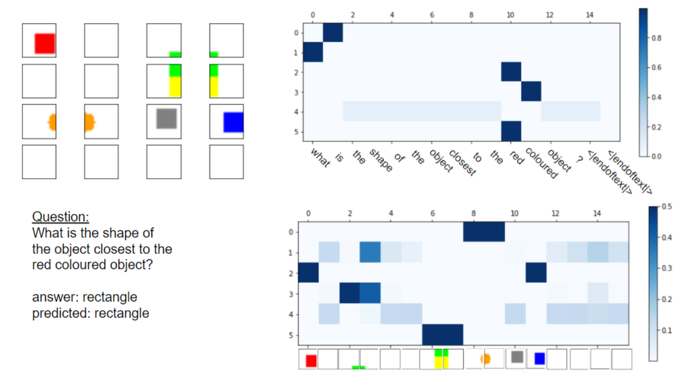

Sparse Vision Language Alignments for VQA

Focused on obtaining object-centric vision and language representations by incorporating slot attention alongside traditional attention mechanisms. Introduced an additional Jensen-Shannon divergence loss to make the vision-language alignments sparse, enhancing interpretability and enabling more efficient representation learning.